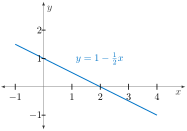
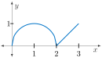
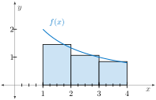
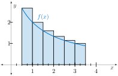
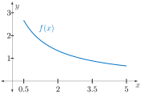
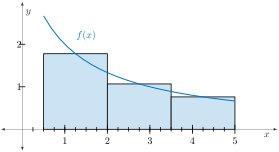

Print preview
Handout Daily Prep 4.3 - The Definite Integral
Section Overview
In this section we introduce a notation used for expressing the limit of a Riemann sum. We thus define what a definite integral is. We will be discussing the definition, meaning, and use of the definite integral for the remainder of the course. Surprisingly, it has a very strong and natural connection to the derivative – a connection we will discuss and explore in Section 4.4. However, in this section, we deduce the properties that this new mathematical object, the definite integral, has based on its definition and its geometrical interpretation.
Section Basic learning objectives
These are the tasks you should be able to perform with reasonable fluency when you arrive at our next class meeting. Important new vocabulary words are indicated in italics.
-
Recognize the parts of the limit definition of the definite integral, especially how the definite integral results from taking a limit of Riemann sums.
-
Identify an integral sign, integrand, and limits of integration.
-
Explain what it means to evaluate a definite integral.
-
Interpret, geometrically, the quantity denoted by \(\displaystyle \int_{a}^{b} f(x) \ dx\text{.}\)
-
Recognize and apply properties that the definite integral possesses. Use these properties to evaluate definite integrals in special circumstances.
Section To prepare for class
Complete all actions listed below. Respond to the questions highlighted with Submit.
-
Read motivating questions and the introduction to section 4.3 (up until Preview Activity 4.3.1).
-
[Submit] Do Preview Activity 4.3.1.
-
Watch video Quick Review - The Definite Integral (3:00).
-
Read section 4.3.2 up to Activity 4.3.2.
-
[Submit] Explore the applet Gaining Geometric Intuition. Submit answers to questions #3-6 at the bottom of the webpage.
-
Prompt Copilot “Please produce and execute Python code that illustrates an upper Riemann sum of the function \(f(x)=\cos(x)+1\) from \(x=0\) to \(x=3\pi\) using n=10 rectangles.”
-
Do these problems.
-
-
Use geometry to evaluate \(\displaystyle \int_{-1}^{4} 1-\frac{1}{2}x \ dx\text{.}\)
Figure 87. The graph of \(y=1-\frac{1}{2}x\) can be used to evaluate \(\displaystyle \int_{-1}^4 1-\frac{1}{2}x \ dx\text{.}\) -

Figure 88.
-
-
Use Table 89 to estimate \(\displaystyle \int_{0}^{12}f(x) \ dx\text{.}\) Find a left sum \(L_{4}\text{,}\) a right sum \(R_{4}\text{,}\) and then average the two.
-
[Submit] Figure 90 illustrates Riemann sum approximations, \(\displaystyle \sum_{k=1}^{n} f(x_{k}^{*}) \Delta x_{k}\text{,}\) to \(\displaystyle \int_{a}^{b} f(x) \ dx\text{.}\) In each, determine the values of \(a, b\text{,}\) and \(n\text{.}\) Then, give expressions for \(\Delta x_{k}\) and \(x_{k}^{*}\text{.}\)
Figure 90. Riemann sum approximations of \(\int_a^b f(x) \ dx\text{.}\)
-
-
Prompt Copilot “Please produce and execute Python code that illustrates a middle Riemann sum of the function f(x)=x\(\wedge\)2+1 from x=1 to x=3 using n=5 rectangles.” Does the AI give you a correct value for the sum being illustrated?
-
Read section 4.3.3 on properties of the definite integral.
Section After class
Solidifying the concepts discussed in class through practice is necessary to build your skills.
-
Read section 4.3.4.
-
Watch video Average Value of a Function (7:34).
-
Explore a nice visualization of The Average Value of a Function.
-
Explore the Average Value of a Linear Function geometrically.
-
Read section 4.3.5 - summary.
Section Advanced learning objectives
In addition to mastering the basic objectives, here are the tasks you should be able to perform after class, with practice:
-
Compute the average value of a function on the interval \([a,b]\) using \(\displaystyle \int_{a}^{b} f(x) \ dx\text{.}\)
-
Interpret the average value of a function as the height of a rectangle.
Section Additional suggestions
-
Watch video Riemann Sum Notation (2:04).
-
Watch video Riemann Sums - How to use Sigma Notation (6:33).
-
Finish (if needed) Activity 4.3.2.
-
(Optional) Watch video explaining parts (a)-(c) of Activity 4.3.2 (4:00).
-
(Optional) Watch video explaining part (d) of Activity 4.3.2 (2:47).
-
-
Watch video Average Value of a Function with an Integral (2:09).
-
Explore another way to visualize the Average Value of a Function.
-
Explore three more applets illustrating the average value of a function.
-
Do these problems.
-
Suppose \(f(x)\) is an odd function (as shown in Figure 91) with \(\displaystyle \int_{-2}^{0} f(x) \ dx = 4\text{.}\)
-
Evaluate \(\displaystyle \int_{0}^{2} f(x) \ dx\)
-
Evaluate \(\displaystyle \int_{-2}^{2} f(x) \ dx\)
-
Evaluate \(\displaystyle \int_{-2}^{2} |f(x)| \ dx\)

Figure 91. -
-
Consider approximating the definite integral \(\displaystyle \int_{0.5}^{5} \frac{4}{1+x}\ dx\) by a Riemann sum approximation\begin{equation*} \sum_{k=1}^{3} \frac{4}{1+\left[ 0.5+k \cdot \left( \frac{3}{2}\right)\right]}\cdot \left( \frac{3}{2}\right). \end{equation*}Using Figure 92, carefully illustrate this Riemann sum as in the last problem. Is this a left sum, a right sum, or neither? Evaluate this sum.
Figure 92. -
Using sigma (\(\Sigma\)) notation, give a middle sum Riemann approximation with \(n=3\) (see Figure 93) that estimates the value of the definite integral \(\displaystyle \int_{0.5}^{5} \frac{4}{1+x}\ dx\text{.}\) Hint: The previous problem can serve as a guide.
Figure 93. A middle sum approximation with \(n=3\text{.}\)
-
-
Watch video What Definite Integrals Are (6:38).
-
Watch video Definite Integrals and Riemann Sums (3:51).
-
Do these problems.
-
Suppose that \(C(t)\) represents the daily cost of heating your house, measured in dollars per day, where \(t\) is the time measured in days and \(t=0\) corresponds to January 1, 2020. Interpret \(\displaystyle \int_{0}^{90}C(t) \ dt\) and \(\displaystyle \frac{1}{90-0}\int_{0}^{90}C(t) \ dt\text{.}\)
-
The value, \(V\text{,}\) of a Tiffany lamp, worth $225 in 1975, increases at 15% per year. Its value in dollars \(t\) years after 1975 is given by \(V = 225(1.15)^{t}\text{.}\) Find the average value of the lamp over the period 1975-2015. The Average Value of a Function applet produces a nice way to calculate this. Hint: Hold the SHIFT key to stretch each axis pictures as needed. Stretch the vertical axis, for example, to about 70,000.
-
Section Answers
Subsection To prepare for class
-
\(L_{4} = (20)(3) + (10)(3) + (5)(3) + (2)(3) = 111, R_{4} = 54\text{;}\) these average to 82.5.
-
-
\(\displaystyle \displaystyle a=1, b=4, n=3, \Delta x_{k} = 1, x_{k}^{*} = k+\frac{3}{4}\)
-
\(\displaystyle \displaystyle a=0.5, b=3.5, n=6, \Delta x_{k} = 0.5, x_{k}^{*} = \frac{1}{2}k\)
-
Subsection Additional suggestions
-
This is a right sum \(R_{3}\text{.}\)Here, \(\displaystyle a=0.5, b=5, n=3, \Delta x_{k} = \frac{3}{2}\) and\(\displaystyle x_{k}^{*} = \frac{1}{2}+ k\left(\frac{3}{2}\right)\text{.}\) The sum is\(\displaystyle \frac{4}{1+2}(1.5) + \frac{4}{1+3.5}(1.5) + \frac{4}{1+5}(1.5) = 4.\overline{3}\text{.}\)
-
Here \(\displaystyle \Delta x_{k} = \frac{6}{4}\text{,}\) \(\displaystyle x_{k}^{*} = -\frac{1}{4}+ k\left(\frac{6}{4}\right)\text{.}\)So, \(\displaystyle \sum_{k=1}^{3}\frac{4}{1+\left[ -\frac{1}{4}+k\left(\frac{6}{4}\right) \right]}\cdot \left(\frac{6}{4}\right)\text{.}\)
Subsection And yet additional suggestions
-
\(\displaystyle \int_{0}^{90}C(t) \ dt\) represents the total cost to heat house for the first 90 days of 2020 (in dollars).\(\displaystyle \frac{1}{90-0}\int_{0}^{90}C(t) \ dt\) represents the average cost (dollars per day) of heating the house for the first 90 days of 2020.
-
\(\displaystyle \frac{1}{40-0}\int_{0}^{40}V(t) \ dt = \frac{1}{40}\int_{0}^{40}225(1.15)^{t} \ dt \approx \$10,740.46\text{.}\) The Average Value of a Function applet produces a nice way to see this as illustrated in Figure 94.
![Graph of an exponential function f(x) that increases very rapidly on the interval from about x = 20 to x = 40. The curve starts near the x‑axis on the left and rises steeply to a large value by x = 40. The region under the curve from x = 20 to x = 40 is shaded in blue to represent the integral, with the label “integral ≈ 129618.37.” A horizontal red line labeled “average value: y = 10740.46” crosses the graph. A text box near the curve displays the formula f(x) = 225·1.15^x. Grid lines and axes with tick marks are shown.](external/AverageValueApp1.jpg)
Figure 94. The average value of \(y=225(1.15)^x\) on \([0,40]\text{.}\)